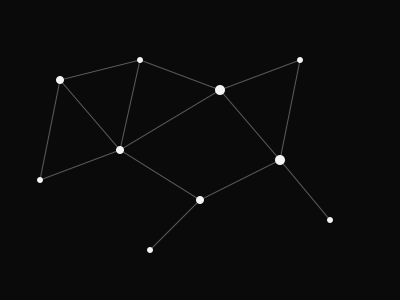
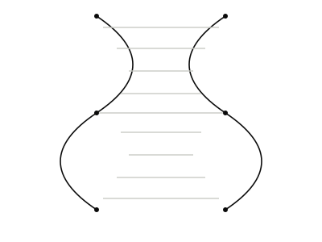
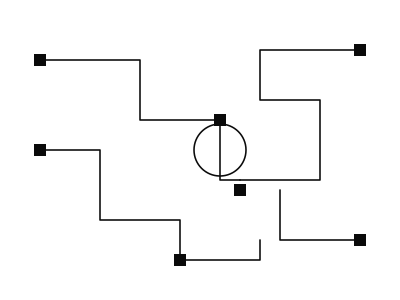

IMAGES
Research visuals
Placeholder graphics in the site's own visual language — swap these for lab photographs, conference moments, or figures from your papers.



IMAGES
Placeholder graphics in the site's own visual language — swap these for lab photographs, conference moments, or figures from your papers.


